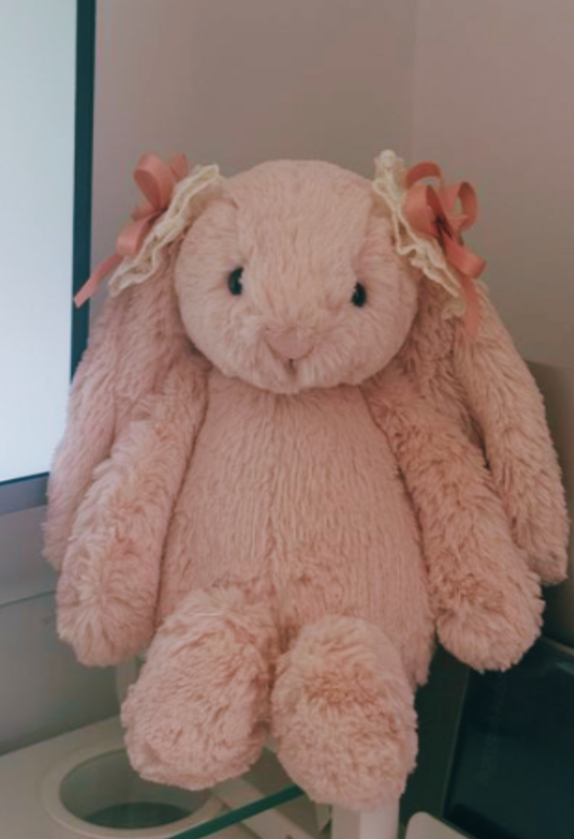

My name is Alys and I am a student athlete in Los Angeles, CA. I am currently on a travel volleyball team as a starting Outside Hitter and an Opposite Hitter.I have played indoor volleyball for 7 years now and I have grown a love for the game. I very much enjoy playing sports and have been a part of my school's indoor volleyball team for the fall season and beach volleyball for the spring. I like listening to music of all kinds whether it is pop, rock, indie, metal, rap, hip-hip,and more. I love movies, especially action, comedy, and romance. I enjoy creating art such as painting, drawing, taking photos or videos. I love ice cream, especially coffee and vanilla flavors. I very much enjoy watching soccer and my favorite team is LAFC.

The purpose of my portfolio is to share my projects from this school year in computer science, to show off my best work, and to state my plans for the future. Using computer science skills has made me grow not only through my code but through my life. I have gotten more organized by seeing my notes as code and having them all color coded so I know a certain topic is a certain color. I have learnt how to create surveys, games, interactive apps, websites, a generating app, and finally a creative portfolio as my final. At the start of the year I had no information or very much care for this subject, but a few weeks into the year I very much loved the class. It taught me how to completely change the way I was thinking because some aspects of computer science are way different from what I originally thought. This year taught me how to code in JavaScript, how to use CSS, HTML, turtle programming, how to use variables, functions, and sprites. More information will be on the following pages.